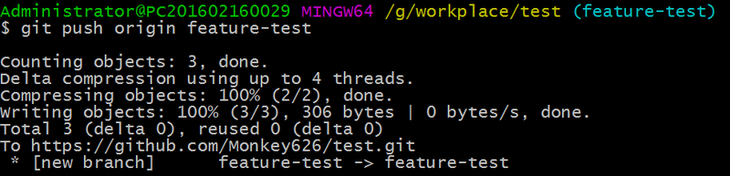
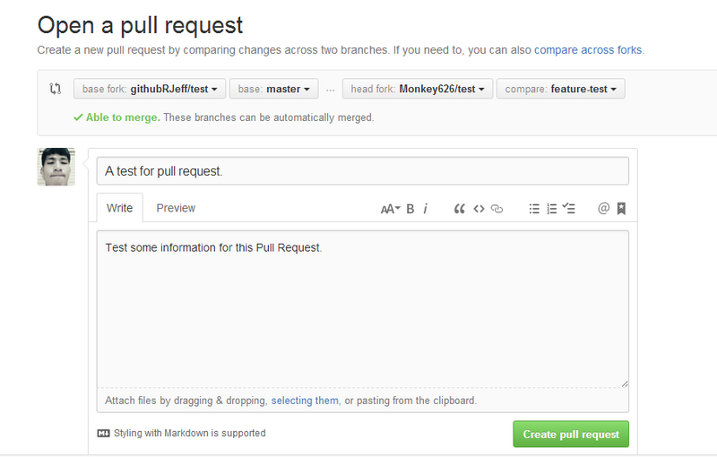

使用GitHub
Github是什么？

一些开发者在使用Git以后，找不到好的Git托管网站，于是Tom Preston Werner 和 Chris Wanstrath 就开发了Github出来，提供Git仓库托管服务。
所以，在我看来，它们两者的关系就是：Git是一个系统，相当于一个工具，而Github就是基于这样一个系统的平台，让开发者更高效地使用Git去托管自己的代码。
如何使用Github？
因为Git是使用仓库进行版本控制的，所以我们在Github的操作也是围绕着仓库展开。
当我们想管理一个项目的代码时，我们就在Github上创建一个仓库，然后上传项目代码，就实现了代码托管。
所以，一般我们的开发流程是这样的：
在本地通过Git建立一个仓库，我们称之为“本地仓库”，然后进行我们的编程工作。使用Git，可以帮助实现版本控制。
在Github上建立一个仓库，我们称之为“远程仓库”，然后将本地仓库的内容推送到远程仓库，同步代码，这样就实现了托管功能。
或者，如果是先在Github上建立了仓库，设置好了项目，那么就将远程仓库的项目克隆到本地仓库，同理。
我个人的理解是，远程仓库——操作Github；本地仓库——操作Git。
本地仓库
创建——初始化仓库
要使用Git进行版本管理，必须先初始化仓库。
建立一个目录，并初始化仓库。 如果初始化成功，执行了git init命令的目录下就会生成.git目录。这个.git目录里存着管理当前目录内容所需的仓库数据。我们将这个目录的内容成为“附属于该仓库的工作树”。
查看仓库状态。 工作树和仓库在被操作过程中，状态会不断变化，所以需要经常用gti status查看当前状态。
提交——版本更新
编辑完代码后，一个完整的提交流程应该是：git status -> git add -> git commit。
git status——查看仓库状态： Untracked files表示修改过的文件尚未追踪，即尚未成为仓库的管理对象（加入到工作树中）。
git add——加入暂存区：暂存区是提交之前的一个临时区域。git add将其加入暂存区，为保存到工作树中做准备。此时再运行git status，提示“Change to be committed”，说明是提交状态。
git commit——保存仓库的历史记录：将刚刚的提交状态保存，这样就算完成了一个版本控制。 -m 参数后的字符串称作提交信息，是对这个提交的描述。
查看——仓库状态
git log——查看提交日志：查看以往仓库中提交的日志，什么人在什么时候进行了提交或合并，以及操作前后有怎样的差别。
git diff——查看更改前后的差别：查看工作树、暂存区、最新提交之间的差别。
查看工作树和暂存区的区别：在test.html中写点东西，先不用git add,直接运行git diff查看，此时显示的是工作树与最新提交状态之间的差别。
查看工作树与最新提交的差别：先执行git add将修改提交到暂存区；如果此时执行git diff,会发现没有任何显示，这是因为执行了git add后工作树和暂存区的状态并无差别。要查看与最新提交的差别，要执行git diff HEAD。
远程仓库
准备
创建账户：如果你还没有Github账户，那么你需要先创建一个账户。 登录后，即可使用Github的功能，创建仓库。
设置SSH Key：Github上仓库与本地仓库连接，是通过使用了SSH的公开秘钥认证方式进行的。所以，得先在本地生成SSH Key，然后设置到Github上，才能实现仓库的远程连接。
打开Git Bash，创建SSH Key。 运行命令：ssh-keygen -t rsa -C "your_email@example.com"
 输入密码后，会出现以下结果，表明创建成功：id_rsa是私有密钥，id_rsa.pub是公开密钥。
输入密码后，会出现以下结果，表明创建成功：id_rsa是私有密钥，id_rsa.pub是公开密钥。在Github中添加公开密钥。
创建——建立远程仓库
创建：
仓库配置：
如果想向Github添加手中已有的Git仓库，建议不要勾选Initialize this repository with a README选项；
Add.gitignore：可以在初始化时生成.gitignore文件，这个设定会帮我们把不需要在Git仓库中进行版本管理的文件记录在.gitignore文件中，省去了每次根据框架进行设置的麻烦。若不使用任何框架，则可不选择。
Add a license：选择要添加的许可协议文件，一般可不选。
创建成功：
克隆——获取远程仓库
当你是先在Github上创建好项目仓库时，此时需要把远程仓库克隆到本地，创建一个本地仓库。
复制HTTPS链接：
打开Git Bash，进入要作为仓库的文件目录：
运行命令：git clone https://github.com/Monkey626/test.git
克隆成功：
进入仓库：查看当前仓库分支信息。
执行git clone命令后，我们会默认处于master分支下，同时系统会自动将origin设置成该远程仓库的标识符（即origin代表了该远程仓库）。
同步——更新代码（从本地仓库传到远程仓库）
当在本地完成好编程作业时，此时需要将代码同步到远程仓库，以实现托管。
添加远程仓库：你需要将远程仓库与本地仓库连接起来，我们用git remote add命令来设置本地仓库的远程仓库。
推送至远程仓库：如果想将当前本地仓库分支下的内容推送给远程仓库，要用git push命令。假定我们在master分支（如果是其他分支，最后的参数就改为其它分支对应名称）下操作
同步——更新代码（从远程仓库拉到本地仓库）
当你的队友将完成了编程作业，将其代码推送到远程仓库后，此时，你可能需要将代远程仓库队友更新后的代码拉到本地，这时要用到git pull命令。
运行命令行git pull：
拉取成功：
Github几大功能
Issue
在软件开发过程中，开发者们为了跟踪BUG及进行软件相关讨论，进而方便管理，创建了Issue。
在Github上，可以将它作为开发者之间的交流工具，多多加以利用。
Issue可以在以下情况使用：
发现软件的Bug并报告；
有事想向作者询问、探讨；
事先列出今后准备实施的任务。
Issue支持markdown语法，也支持添加标签便于管理。
在Issue里可以添加图片，可以使用表情。
Pull Request
Pull Request是用户修改代码后向对方仓库发送采纳请求的功能，也是Github的核心功能。
Pull Request的流程：
Fork：将你要修改代码的项目仓库Fork到自己的Github账号上，创建一个属于你的仓库；

Clone：将其clone到本地
Branch：在本地仓库创建一个特性分支（有了更明确的主题，也便于对方了解自己修改代码的意图），用于本次代码修改。
Commit：提交修改
Push：要从Github发送Pull Ruquest，Github端的仓库必须有一个包含了修改后代码的分支。所以，要创建本地特性分支的相应远程分支。
Send：发送Pull Request。
这样，就是一个完整的发送Pull Request流程。
Wiki
Wiki是一个使用简单的语法就能编写文档的功能。
所有有权限的人都可以对文中进行修改。
Wiki多被用于编写博客文章、教程、使用手册。
参见
- ：studyFiles/GitHub入门与实践.pdf
Gitorious(Ruby)
InDefero(PHP)
http://freshmeat.sourceforge.net/projects/indeferoGirocco(Perl)
Gitosis(Python)
Gitolite(Perl)
GitBucket，是一个用scala写的
gitlab，是用Ruby On Rails
github enterprise，如果你的基金充足，github企业版